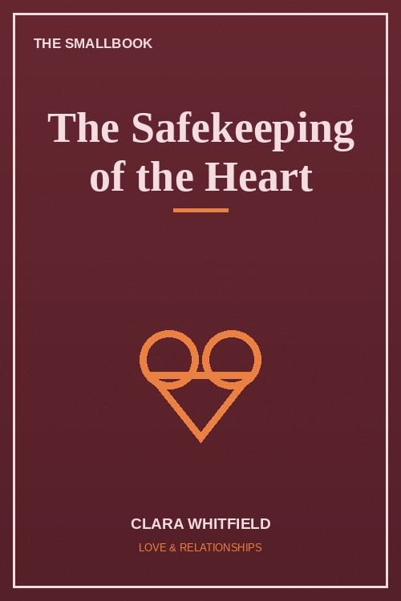

Library › Love & Relationships
The Safekeeping of the Heart - Summary & Key Lessons

What long marriages actually do all day: a field study of couples who lasted fifty years.
📖 OPEN THE FULL INTERACTIVE BREAKDOWN →🌐 Read it in Hindi, Hinglish, Gujarati, Tamil & 22 more languages, with audio.
💡 The Big Idea
Clara Whitfield spent six years visiting couples married over fifty years, in twelve countries, expecting secrets and finding habits. Long marriages, she reports, run on repair speed: hurts are named within days, affection is administered in small daily doses rather than grand gestures, and each partner protects the other's dignity in public as fiercely as their own. The romance is real, but it is a byproduct. Maintenance is the marriage.
🧠 The 8 Key Lessons
Lesson 1: Repair Speed Is the Whole Secret
The Repair Crews
Across twelve countries the pattern repeated: happy long couples raise hurts quickly and specifically, within days, while the tape is still warm. Unhappy ones archived grievances for anniversaries and ambushes. Clara Whitfield calls it repair speed, and found it predicted marital survival better than compatibility, income or even affection. The skill is unglamorous: name the tear while it is small enough to stitch at the kitchen table, and the roof never needs rebuilding.
📖 Example: A couple married fifty eight years in Lisbon had a rule from their first year: nothing sleeps twice. A hurt named before the second night got a conversation; after that it got interest. They credit the rule, not romance, for outliving three of their children's marriages. Read the full example →
⚡ Do this: Set your repair deadline this week: any hurt gets named within 48 hours, kindly, specifically, once. No archives, no ambushes.
Lesson 2: Small Doses Beat Grand Gestures
The Daily Dose
The lasting couples were almost disappointing in their romance: tea made without asking, a hand on a shoulder passing in a corridor, the good biscuits bought because Tuesday. Grand gestures appeared in the divorced couples' stories, as compensations. Clara Whitfield's dose finding matches the laboratory research: frequent small deposits keep the emotional account solvent, and solvency is what survives the large withdrawals that every long life eventually presents.
📖 Example: An Ohio farmer expressed fifty years of love in a sentence his wife quoted to Clara Whitfield: he always warmed her side of the bed in winter with a hot water bottle before she came up. She reported this with the gravity other women reserve for diamonds, because frequency outranks size in the arithmetic of being cherished. Read the full example →
⚡ Do this: Administer three small doses daily for two weeks: one practical, one affectionate, one appreciative. Track nothing; let your partner's weather report the results.
Lesson 3: Protect Their Dignity Like Your Own
In Public and In Private
The fifty-year couples never corrected, mocked or outshone each other in company. Private disagreement was universal; public diminishment was absent, and Clara Whitfield came to see it as structural: a partner whose dignity you defend in public trusts you with their dignity in private, including their fears and their ageing body. The couples who performed contempt for laughs were, in her sample, rehearsing the divorce announcement to an audience.
📖 Example: A Sydney husband famous for wit never once made his wife the joke in forty years of dinners. Asked why, he looked puzzled: she has to live in the room after I get the laugh. His wife, listening, supplied the marriage's epitaph in advance: he made every room safe for me. Read the full example →
⚡ Do this: Audit your last month of company talk: one joke, correction or story at your partner's expense gets retired and privately apologised for this week.
Lesson 4: The Shared Enemy Must Never Be Each Other
Us Against the Problem
When money broke, children rebelled or illness arrived, the lasting couples in Clara Whitfield's study described the crisis in a grammar the divorced couples never used: the problem was the opponent, and the marriage was the team. This was not a slogan but a reflex, visible in how they allocated blame to circumstances and strategy to themselves. Couples can install the reflex deliberately: name the external enemy together, in one sentence, before any discussion of solutions.
📖 Example: A couple who lost their shop in a flood described the water as the thief and themselves as the night watch. Couples Clara Whitfield interviewed after bankruptcy, by contrast, often described each other as the flood. The facts were similar; the grammar decided the casualty list. Read the full example →
⚡ Do this: In your current hardest problem, write the one sentence that names it as the shared enemy. Say it together before the next planning talk.
Lesson 5: Rituals Are the Load Bearing Walls
The Shape of a Week
Every fifty-year couple had liturgy: the Sunday walk, the tea at four, the Friday fish, the anniversary letter. Clara Whitfield argues the rituals are not decoration on the marriage; they are the schedule on which affection, repair and information actually travel. When couples in trouble described losing rituals first, years before losing love, she learned to ask about the calendar before asking about feelings. Restore the ritual and the feelings frequently follow it home.
📖 Example: A Manchester couple's forty year ritual was tea in bed at six, made alternately, no phones admitted since phones existed. Their children called it the parliament. Every family crisis in the interview, traced back, had been processed first at that tea. Read the full example →
⚡ Do this: Restore or found one weekly ritual this month: small, timed, phone free, and defended like a train that cannot be missed.
Lesson 6: The Ledger of Kindness Is Kept, and It Matters
Remembering Well
Clara Whitfield noticed the lasting couples kept accounts, but of kindnesses: they could recite each other's generosities across decades with dates attached, while injuries were remembered vaguely and mercifully blurred. The divorced couples kept the opposite ledger. Memory, she concludes, is a marital policy, not a passive recording: what a couple rehearses about its past becomes the story the future must live up to. Couples can audit their ledger and begin, deliberately, keeping the other book.
📖 Example: Asked about a hard decade, a wife in the study answered with her husband's behaviour during her mother's illness in 1983, in detail, eyes bright. Her husband's version of the same decade featured her night shifts during his unemployment. Neither mentioned the grievances Clara Whitfield knew the decade contained. The ledgers had been curated, and the marriage lived inside the curation. Read the full example →
⚡ Do this: Start the kindness ledger tonight: write three of your partner's generosities with dates. Read it before your next complaint.
Lesson 7: Touch Is a Language That Must Not Go Extinct
The Physical Thread
The lasting couples touched: hands held at eighty, a palm between shoulder blades in a doorway, the kiss that punctuation marks leaving and returning. Clara Whitfield is blunt that when touch died in the marriages she studied retrospectively, it died before the conversation did, and its death was the true obituary. Touch is maintainable independently of desire's weather; couples who keep the physical thread during dry seasons find the rest of the language still installed when the seasons turn.
📖 Example: An Austrian couple who had not shared a bedroom in a decade for medical reasons maintained a protocol of touch their children described as embarrassing and enviable: morning and night, hands and foreheads, without exception for fifty six years. The protocol, Clara Whitfield writes, was the marriage, continued by other means. Read the full example →
⚡ Do this: Install the doorway protocol this week: touch at every leaving and returning for fourteen days. Do not announce it. Observe it.
Lesson 8: Forgiveness at Speed, With a Memory Policy
The Art of the Short Account
The fifty year couples forgave quickly and, Clara Whitfield emphasises, incompletely remembered. Their secret was not saintliness but policy: offences were processed once, at the repair conversation, and then deliberately filed under weather rather than character. The refusal to re-litigate is what makes speed possible the next time; a partner who knows the offence will be quoted for decades defends like it. Short accounts, she concludes, are a kindness a couple does its future selves.
📖 Example: One husband defined their system in a sentence Clara Whitfield took for the book's epigraph in draft: we have an excellent marriage and a terrible archive. They could not produce, between them, the details of fights their children remembered clearly. The archive had been pulped by policy. Read the full example →
⚡ Do this: Process one offence completely this week, then pulp the archive: agree aloud that it will not be quoted again, and keep the agreement.
✅ 5-Step Action Plan
- Set the 48 hour repair deadline together.
- Three small doses daily for two weeks.
- Retire one public joke at your partner's expense; apologise privately.
- Name one tear this week while it is still kitchen-table sized.
- Defend your partner's dignity in one room where it costs you a laugh.
- Review the year for grievances older than a month; stitch or release them.
- Warm the metaphorical side of the bed: one creature comfort, daily.
⚠️ When This Doesn't Work
Clara Whitfield's couples are survivors telling their stories backward, which flatters every habit they share; the patterns match laboratory research unusually well, but no habit list resurrects a marriage where safety or goodwill is gone.
💀 The Graveyard Proves It
💬 Best Quotes from The Safekeeping of the Heart
- “Long love is not found. It is maintained, weekly, like a roof.”
- “Every lasting couple I met was a good repair crew with a long memory for kindness.”
- “The marriages that died had not run out of love. They had run out of small repairs.”
Interactive version: mark lessons as read, listen in your language, share quote cards.